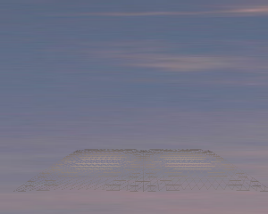

CameraAndLightNodes.h
The program illustrates how to move cameras and lights about the scene, as if they were Spatial objects. The application uses the classes CameraNode and LightNode to do this. The camera may be moved through keystrokes. Two lights move rigidly with the camera. Although the images make it look as if the lights are spot lights, they are actually directional lights. The spot light effect is generated by using a Bezier triangle mesh that is slightly curved and is positioned so that the intersection of the mesh with the plane is approximately circular. The light state affects the Bezier mesh, but not the plane of the ground. In addition to the light state, the mesh also needs a material state for its alpha channel and an alpha blending state to get transparency so you can see the ground "lit" by the lights. The image on the right shows the wireframe to emphasize that the mesh itself is what is lit.
 |
 |